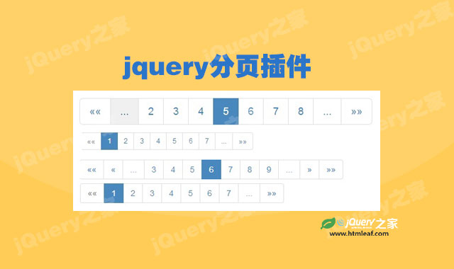

jQuery客户端分页插件cPager
Fast Client Side Pagination Plugin - jQuery cPager
jQuery之家
返回下载页
{for item in data} <li class="li-item hide">${item.name}</li> <li class="li-item hide">你好</li> {/for}
如果你喜欢这个插件，那么你可能也喜欢:
jquery分页插件jqPaginator

jquery分页插件am-pagination.js